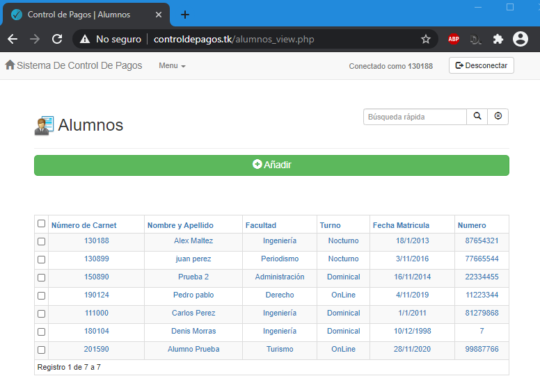
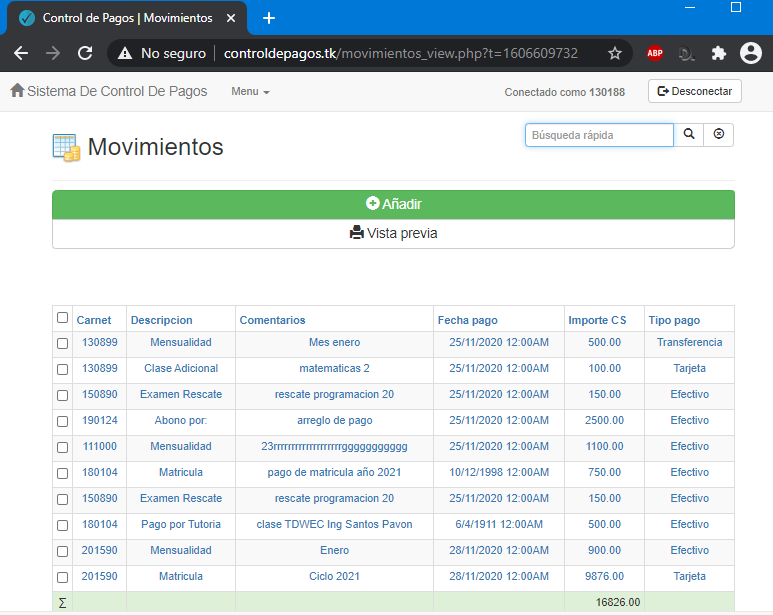

Home
-
Sistema de Control de Pagos
Introducción:
Pequeño pero útil sistema creado por alumnos de la UdeM
Los sistemas de pago seguros y eficientes son vitales para que el sistema financiero funcione con efectividad. Los sistemas de pago son los medios a través de los cuales se transfieren los fondos entre bancos, y los sistemas de pago más importantes, a los cuales este informe se refiere como sistemas de pago sistémicamente importantes,1 son el principal canal por el cual se pueden transmitir los impactos entre los sistemas y mercados financieros internacionales y nacionales. Los sistemas de pago sólidos son, por consiguiente, un requisito fundamental para mantener y promover la estabilidad financiera.
Durante los últimos años, se ha desarrollado un amplio consenso internacional sobre la necesidad de fortalecer los sistemas de pago a través de la promoción de normas y prácticas internacionalmente aceptadas para su diseño y operación.Podemos validar el funcionamiento desde el porta de login
Usuario: cajero
contraseña: demo1234

Resumen
-
1. Descripción del Sistema:2. Objetivos Generales:
Un sistema de control de pagos que se realiza de forma manual en cualquier centro académico puede presentar algunos inconvenientes o problemas de ejecución:
* Poca confiabilidad en algunos resultados de reportes de pago.
* No existe un plan de contingencia de la información.
* Se incurre demasiado tiempo en la actualización del control de la información.
* Demora de informes solicitados.
* Manejo de alto volumen de información en el entorno académico por parte del centro.
Partiendo de estos inconvenientes, se desarrollará un sistema o un modelo de sistema automatizado, que será la base para el sistema de control de pagos académico. Este sistema vendrá a dar rapidez, confiabilidad y seguridad a las operaciones que se realizan en el registro económico de la institución académica.
3. Objetivos Específicos:Mantener un control oportuno de las transacciones que se realizan en la Universidad de Managua para que no haya eventualidades en los procesos monetarios de los estudiantes.
4. Uso Pr[actico del sistema:* Recopilar información de la institución académica acerca del actual control de pagos que se utiliza.
* Analizar las desventajas que afecten a estudiantes y personal de la institución en sus procesos monetarios.
* Determinar las causas de los problemas que se han presentado por el mal uso de la información.5. Descripción de la Solución:El sistema desarrollado viene a convertirse en una herramienta amigable con el usuario, es de fácil acceso, fácil de utilizar, aporta seguridad, y hace de los procesos una actividad más práctica.
La utilización de este nuevo sistema permite realizar todos los procesos necesarios con respecto a los pagos en la institución académica, entre los cuales tenemos:
* Pago de mensualidades.
* Pago de clases adicionales.
* Pago de exámenes de suficiencia.
* Pago de exámenes de rescate.
* Pago de tutorías.
* Reportes de pago por concepto o consolidado.
* Entre otras…6. Conclusión:Para la realización de este sistema se utilizaron lenguajes HTML, CSS, PHP y JavaScript. Puesto que las operaciones que se buscaban están relacionadas meramente con los alumnos, se procedió a elaborar un registro que puede ser modificado por el usuario donde se añaden todos los datos necesarios para la identificación completa del alumno, entre los datos encontramos Nombre, Carnet, Facultad, Numero, Turno y Fecha de matrícula; cabe mencionar que los registros ingresados son almacenados en una base de datos de la cual se pueden hacer consultas posteriores a través de la misma aplicación.
De igual manera se elaboro un registro de los movimientos monetarios que se realizan, con cada una de las características necesarias para asegurar la integridad de los datos, eliminar la redundancia y llevar un control claro de los importes de cada alumno. De esta manera se permite al usuario completar cada campo requerido con auto ayuda del mismo sistema, para evitar confusiones y que los datos lleguen a la base de datos y se reflejen correctamente en las consultas hechas desde el sistema.
Una de las tareas importantes que se pueden realizar es la de imprimir informes de los datos, ya sea sobre el registro personal del alumno, o bien, de los pagos o importes cargados al alumno; estos informes pueden ser generados con toda seguridad y sin riesgo de errores que afecten tanto al alumno como a la institución.Por lo expresado anteriormente, fue evidente la necesidad de mejorar la calidad del antiguo sistema de control de pagos(manual), pues existían muchas deficiencias y se debía asumir un riesgo mayor. Concluimos que el desarrollo de un sistema de control de pagos moderno ha permitido eliminar completamente los problemas que se identificaron en un inicio, ha producido un notable incremento en la eficiencia laboral, ha disminuido casi a ninguna el numero de incidencias que se tenían anteriormente, e incluso ha reducido la inversión económica de la institución con respecto a los controles de pago.
Alumnos
La ficha del alumno es la base del sistema. Se considera que cada alumno es un cliente, y se ha adaptado la ficha del alumno al completo para que incluya toda la información necesario de cada alumno.

En esta sección se puede agregar o añadir un nuevo alumno ingresando sus datos personales y academicos. tambien se puede filtrar un alumno especifico ingresando su numero de carné al mismo tiempo con el super usuario del sistema se permite eliminar o ver la vista previa de una impresion o reporte.Movimientos
En la seccion de Movimientos podra realizar o añadir pagos a las mensualidades u obligaciones pendientes de cancelar. Podrá realizarse los pagos con cualquier tarjeta de credito o debito.

Tambien se pueden ver vistas de impresión o reporte y hacer busquedas filtrando datos especificos con el numero de carné del estudiante, para eliminar alguno o ver sus datos de forma mas ordenada
miembros
-
Miembros del Equipo
Alex Francisco Maltez
Ingeniería En Sitemas
130188
Carlos Iván Pérez Ruiz
Ingeniería En Sitemas
111999
Denis David Morrás Loáisiga
Ingeniería En Sitemas
180104
Dania De Los Ángeles Ramos Mairena
Ingeniería En Sitemas
170108
Ronald Steven Pérez Castillo
Ingeniería En Sitemas
151570
Info
-
Colaborá
Estamos abiertos para colaborar con todos los que estén dispuestos a trabajar en función de mejorar el proyecto y obtener un mejor resultado.
Podrías conectate con nosotros; al siguiente corre: alxteam.ni@gmail.com
Puedes descargar la documentación desde el siguiente enlace: